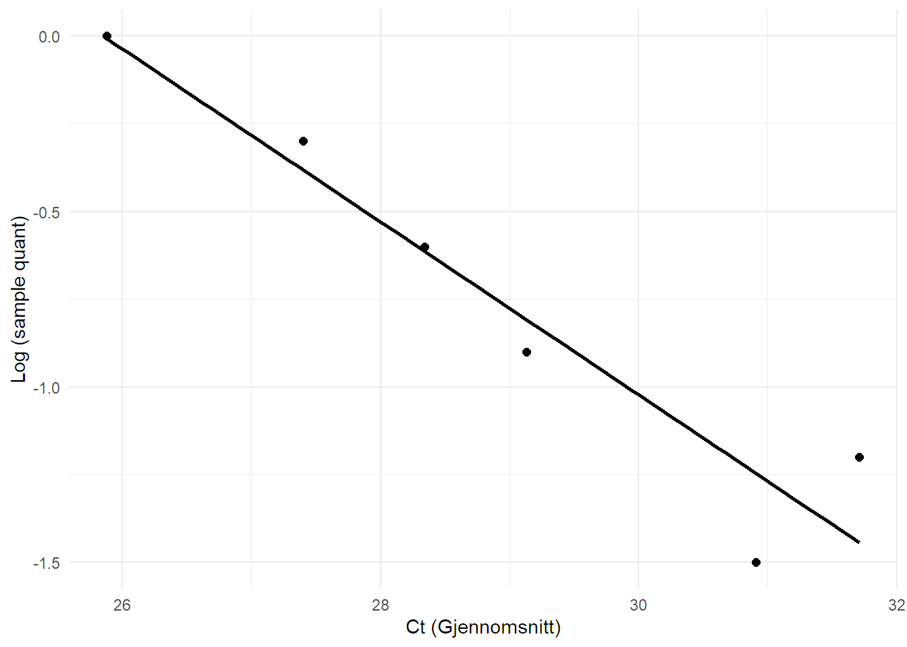

| Fortynningsrekke | Ct1 | Ct2 | Ct3 | Ct_gj_snitt | Sample_quant | Log_sample_quant | SD | CV_prosent |
|---|---|---|---|---|---|---|---|---|
| 1 | 26.09 | 25.68 | 25.86 | 25.88 | 1.00 | 0.00 | 0.21 | 1.00 |
| 1/10 | 27.16 | 27.76 | 27.27 | 27.40 | 0.50 | −0.30 | 0.32 | 1.00 |
| 1/100 | 28.42 | 28.95 | 27.64 | 28.34 | 0.25 | −0.60 | 0.65 | 2.00 |
| 1/1000 | 28.85 | 29.36 | 29.16 | 29.13 | 0.12 | −0.90 | 0.25 | 1.00 |
| 1/10000 | 30.00 | 30.22 | 34.92 | 31.71 | 0.06 | −1.20 | 2.78 | 9.00 |
| 1/100000 | 30.87 | 30.68 | 31.19 | 30.91 | 0.03 | −1.50 | 0.25 | 1.00 |
3 Labrapport: RNA-ekstraksjon og -analyse
1 Introduksjon
RNA, ribonucleic acid, finnes i alle celler og har viktige oppgaver når det kommer til både produksjon av proteiner og genregulering (1). RNA skiller seg fra DNA på flere områder, men en karakteristisk forskjell er RNA-ets utseende og oppbygning. Der DNA består av to tråder i en dobbelheliks, er RNA en tråd med en annen oppbygning. RNA er bygget opp av nukleotider, som videre består av blant annet en nitrogenbase. Disse basene danner basepar AU og GC, og skiller seg fra DNA som danner AT og GC (2). Gjennom en prosess kalt transkripsjon skapes en RNA-sekvens som er en kopi av et bestemt gen i DNA-et. Denne RNA-sekvensen kalles mRNA, og inneholder oppskriften for å lage et bestemt protein (1). Det er rekkefølgen på nitrogenbasene som avgjør proteinet og dets funksjon. Siden mRNA gir oss et genuttrykk, kan molekylet gi mye informasjon om proteiner og gener i kroppen vår. Det kan blant annet fortelle oss hvilke fibertyper vi finner i skjelettmuskulatur, basert på deres uttrykk for en av de tre MHC-isoformene. Gjennom ulike prosesser kan man kvantifisere mRNA ved bruk av DNA-baserte metoder, som f.eks qPCR og RNA sequencing.
2 Metode
2.1 qPCR
qPCR er en metode som brukes til å kvantitativt bestemme mengden av et gen i en prøve (3). For å kunne gjennomføre metoden kreves cDNA (complementary DNA), noe vi kan omdanne RNA til gjennom reversert transkripsjon. Dermed blir cDNA en kopi av RNA-uttrykket, og man får muligheten til å kvantifisere mengden av et bestemt gen. I vårt forsøk var det uttrykket av myosin heavy chain I (MHC I), myosin heavy chain IIa (MHC IIa) og myosin heavychain IIx (MHC IIx) før og etter en to ukers treningsperiode som var aktuell å se på. I qPCR reaksjonen lages det kopier av disse genuttrykkene, og det blir bruk en fluorescens for å finne ut hvor mange sykluser som trengs for å nå terskelen for en eksponentiell økning i fluorescensen. Ut ifra terskelen kan man derfor beregne konsentrasjonen av målgenet (4). Antall sykluser som er nødvendig kalles Ct-verdi. Lav Ct-verdi er videre et resultat av høy konsentrasjon av RNA i prøven, og vice versa. For å hente ut disse Ct-verdiene brukte vi Delta-Delta-Ct-metoden, og vi kan dermed analysere endringen i MHC-uttrykket fra prøvene før og etter treningsperioden (4).
Det som trengs for denne protokollen er en real-time PCR-maskin, QuantStudio 5 og en qPCR reaksjonsplate. For å utføre eksperimentet trenger du også ultrarent vann, pipeteringsutstyr og SYBR-green Master mix. For å klargjøre til en qPCR-reaksjon måtte vi sette sammen master-mixen, som inneholder 5μl av Sybr-green 2X master-mix per reaksjon, 1 μl av primermix for både Forward og Reverse (5μl hver), og 2μl H2O. Denne master-mixen er viktig for å forberede reaksjonen.
Deretter tilsatte vi 8 μl av master-mixen vi lagde i 30 ulike brønner på qPCR-platen, før vi tilsatte 2 μl av cDNA i hver av de samme brønnene. Det er viktig å merke seg at mengden her kan justeres etter behov, men at 10 μl er et godt utgangspunkt. Det er også en fotnote som påpeker at konsentrasjonen av primere kan kreve ytterligere optimalisering. Dette er en viktig del av protokollen for å sikre nøyaktige og pålitelige resultater. Etter at brønnene er fylt settes platen inn i real-time qPCR maskinen, QuantStudio 5 (5). Her utsettes platen for en rekke temperatursykluser, og maskinen analyserer kontinuerlig data om fluorescensen.
Det første stedet i temperatursyklus er en økning på 1.99 grader/sek til temperaturen nådde 50 grader, der den holdt varmen konstant i 2 min. Etter de to minuttene økte temperaturen med 1.99 grader/sek til den nådde 95 grader som ble holdt i 2 min. Etter de to minuttene startet det en syklus som ble repetert 40 ganger. Syklusen består av et sekund på 95 grader, før den synger med 1.77 grader/sek til 60 grader. 60 grader ble holdt konstant i 30 sekunder før det ble tatt et bilde av brønnens fluorescens. Etter det økte temperaturen med 1.99 grader/sek til 95 grader, der den ble holdt konstant i 15 sekunder. Syklusen ble deretter repetert. Deretter sank temperaturen med 1.77 grader/sek til 60 grader og ble holdt i 1 minutt. Etter det økte temperaturen med 0.15 grader/sek opp til 95 grader, der den ble holdt konstant i 15 sekunder. Etter denne temperatursyklusen ble resultatene presentert som Ct-verdier, og vi kan lese og analysere konsentrasjonen av de ulike genuttrykkene fra brønnene.
2.2 RNA-ekstraksjon
RNA-ekstraksjon er en metode som brukes for å undersøke kvantiteten og sekvensene i RNA. Første steg i metoden er å senke RNA i TRIzol. Dette gjøres for å hemme RNA-spesifikke nedbrytende enzymer og forstyrrende cellulære komponenter. Deretter ble det lagt til kloroform. Blandingen ble deretter sentrifugert (kloroform og sentrifugering blir til løselig RNA). Etter sentrifugeringen ble den vandige fasen fjernet. Denne inneholder RNA. For å utfelle RNA fra løsningen la vi til isopropanol. Etter dette ble blandingen sentrifugert og vi fikk en pellet som inneholdt RNA. For å fjerne kjemikalier fra tidligere steg ble RNA-pelleten vasket med etanol. RNA-pelleten er ustabil og ble oppbevart i fryser for å opprettholde egenskapene dens. Til slutt kunne vi kvantifisere og sjekke kvaliteten på RNA.
2.3 Fortynningsrekke
Prøvene ble fortynnet sammen med ultrarent vann. Fortynningen ble doblet for hver gang. Det vil si at i “brønn” nummer en var det lik fordeling mellom ultrarent vann og prøve. I “brønn” nummer to var det halvparten så mye prøve som i “brønn” nummer 1. Dette fortsetter i seks rekker (1, 0,5, 0,25, 0,125, 0,0625 og 0,03125). Ut fra qPCR-fortynningsrekken vil vi kunne lese hvor valide resultatene er. Resultatene kan ses som en lineær modell i Figur 3.1.
3 Resultat
Resultat fra qPCR er vist i Tabell 3.1. Fortynningsrekke 1, 1/10 og 1/1000 hadde lite varians mellom Ct1, Ct2 og Ct3 med en variasjonskoeffisient (CV) på 1%. Fortynningsrekke 1/100 viste også lite variasjon mellom Ct1, Ct2 og Ct3 med CV på 2%. I fortynningsrekke 1/10000 ser vi derimot at Ct3 skilte seg betydelig fra Ct1 og Ct2 (34,927 vs 30,0 og 30,2). Dette resulterte i en relativt høy CV på 9%. Resultatene fra Tabell 3.1 ga en primereffektivitet på 86,54% og R² på 0,91.
Prosentvis andel MHC I, -IIa og -IIx før og etter de fem treningsøktene er vist i Tabell 3.2. Genuttrykket for MHC I gikk opp fra 18,16% før treningsintervensjonen til 45,54% etter treningsintervensjonen, og fra 57,84% til 85,77% for MHC IIa. Genuttrykket for MHC IIx gikk derimot ned, fra 24,01% til 3,53%.
| Time | MHC_I_mean | MHC_IIa_mean | MHC_IIx_mean | MHC_I_cv | MHC_IIa_cv | MHC_IIx_cv |
|---|---|---|---|---|---|---|
| W0* | 18.25 | 16.58 | 17.85 | 5.80 | 11.77 | 2.51 |
| W2** | 20.61 | 17.61 | 22.21 | 23.52 | 3.93 | 3.26 |
| Mean = gjennomsnitt, CV = variasjonskoeffesient, *W0 = før intervensjon, **W2 = etter intervensjon | ||||||
Tabell 3.3 viser gjennomsnittsverdier, standardavvik og CV for triplikatene til MHC I, IIa og IIx for W0 og W2.
| Tidspunkt | Genuttrykk | ||
|---|---|---|---|
| MHC_I | MHC_IIa | MHC_IIx | |
| W0* | 18.16 | 57.84 | 24.01 |
| W2** | 45.54 | 85.77 | 3.53 |
| *W0 = før intervensjon, **W2 = etter intervensjon | |||
En lineær modell av forholdet mellom mengden prøve og antall sykluser for å nå terskelen for fluorescens er vist i Figur 3.1. Fortynningsrekke 1/10000, som hadde en uteligger, er punktet lengst til høyre i figuren.

4 Diskusjon
Resultatene fra qPCR’en viste relativt lav CV for de fleste fortynningrekker. Unntaket var fortynningsrekke 1/1000, med en CV på 9%. Dette skyldes at verdien ved Ct3 var betydelig høyrere enn verdiene for Ct1 og Ct2. Denne utliggeren kan for eksempel skyldes feil eller unøyaktighet ved pippettering, eller kontaminering av prøven. Outlieren førte i sin tur til en noe lav R2 på 0,91, sammenlignet med gjeldende anbefalinger på >0,98 (6). Utliggeren kan også ha påvirket primereffektiviteten vår på 86,54%, noe som også er lavere enn det aksepterte intervallet på 90-110% (7). Det kan tenkes at dersom denne utliggeren lå nærmere de to andre verdiene i fortynningrekken, ville primereffektiviteten og R2 havnet innenfor anbefalingene. Dersom vi fjerner denne utliggeren, får vi en mye lavere CV på 1%. Samtidig endres R2 til 0,99 og primereffektivitet til 103,71, hvorav begge desse verdiene er innenfor deres respektive anbefalinger.
I Tabell 3.2 kan vi se en økning i MHCIIA, hvor prosentandelen gikk fra 57,84% til 85,77%. Samtidig ser vi en reduksjon av MHCIIX, som gikk fra en prosentandel på 24,01% til 3,53%. Dette er i tråd med observasjonene til Andersen og Aagaard (8), som undersøkte forandringer i muskelfibertype etter tre måneder med tung styrketrening. Vi kan også observere en stor økning i MHCI, som gikk fra en prosentandel på 18,16% til 45,54%. Widrick et al. (9) fant hverken økning eller redusering av MHC I etter styrketrening i sin 12-ukers studie, så det er dermed usikkert hva grunnen til denne store økningen er. Grunnet disse store forskjellene i muskelfibersammensetning etter kun fem treningsøkter kan man anta at testpersonen er utrent, og at en trent person ville hatt betraktelig mindre endringer i sammensetning.
Den store økningen i MHC I uttrykk fra W0 til W2 kan også skyldes feil i pipettering. MHC I for W2 hadde en CV på 23,52 som viser til store variasjoner mellom de tre målingene. Det er ikke notert avvik knyttet til pipettering i rapporten, noe som gjør det vanskelig å forklare eksakt hva som er årsaken til variasjonen.
5 Konklusjon
Det ser ut som at en to ukers treningsperiode øker genutrykket for MHC IIa og reduserer uttrykket for MHC IIx. Dette er i tråd med tidligere forskning (8). Det ser også ut som at uttrykket for MHC I øker etter en treningsperiode, men dette er noe usikkert ettersom denne økningen kan ha vært et resultat av målefeil. Det er også viktig å tolke resultatene med forsiktighet ettersom det kun er undersøkt en person.
1.
Kukurba KR, Montgomery SB. RNA sequencing and analysis. Cold Spring Harbor Protocols [Internet]. 2015 Apr;2015(11):pdb.top084970. Available from: http://dx.doi.org/10.1101/pdb.top084970
2.
Haugen MN. Baseparing [Internet]. Store Medisinske Leksikon. 2023. Available from: https://sml.snl.no/baseparing
3.
Taylor SC, Nadeau K, Abbasi M, Lachance C, Nguyen M, Fenrich J. The ultimate qPCR experiment: Producing publication quality, reproducible data the first time. Trends in Biotechnology [Internet]. 2019 Jul;37(7):761–74. Available from: http://dx.doi.org/10.1016/j.tibtech.2018.12.002
4.
Livak KJ, Schmittgen TD. Analysis of relative gene expression data using real-time quantitative PCR and the 2−ΔΔCT method. Methods [Internet]. 2001 Dec;25(4):402–8. Available from: http://dx.doi.org/10.1006/meth.2001.1262
5.
Applied Biosystems. QuantStudio 5 [Internet]. Available from: https://www.thermofisher.com/order/catalog/product/A34322
6.
Taylor KL, Cronin J, Gill ND, Chapman DW, Sheppard J. Sources of variability in iso-inertial jump assessments. International Journal of Sports Physiology and Performance [Internet]. 2010 Dec;5(4):546–58. Available from: https://doi.org/10.1123/ijspp.5.4.546
7.
Hays A, Islam R, Matys K, Williams D. Best practices in qPCR and dPCR validation in regulated bioanalytical laboratories. The AAPS Journal [Internet]. 2022 Feb;24(2). Available from: http://dx.doi.org/10.1208/s12248-022-00686-1
8.
Andersen JL, Aagaard P. Myosin heavy chain IIX overshoot in human skeletal muscle. Muscle & Nerve [Internet]. 2000;23(7):1095–104. Available from: http://dx.doi.org/10.1002/1097-4598(200007)23:7<1095::AID-MUS13>3.0.CO;2-O
9.
Widrick JJ, Stelzer JE, Shoepe TC, Garner DP. Functional properties of human muscle fibers after short-term resistance exercise training. American Journal of Physiology-Regulatory, Integrative and Comparative Physiology [Internet]. 2002 Aug;283(2):R408–16. Available from: http://dx.doi.org/10.1152/ajpregu.00120.2002